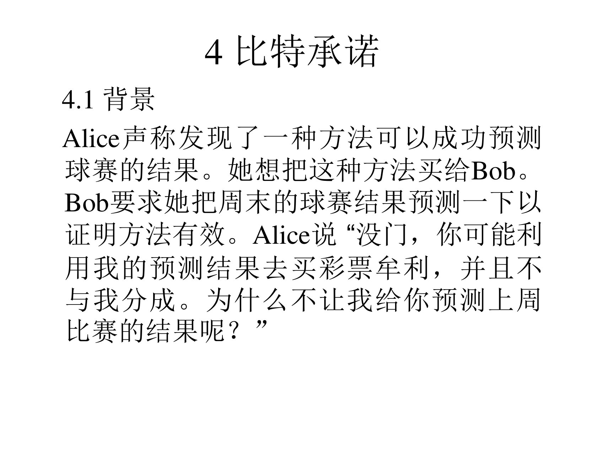
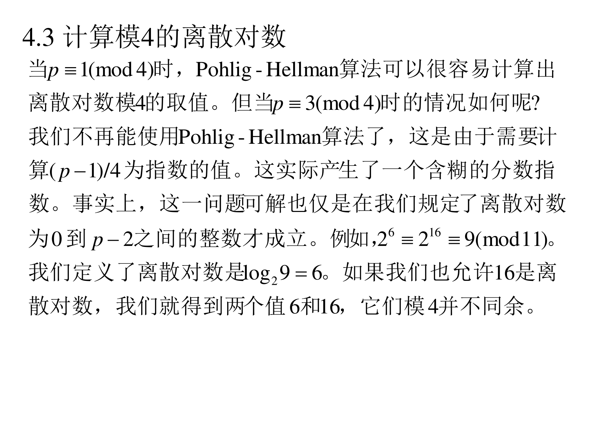
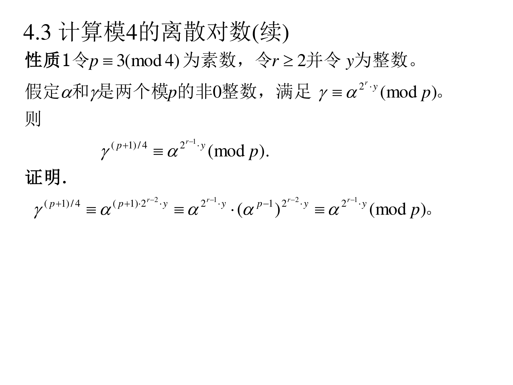
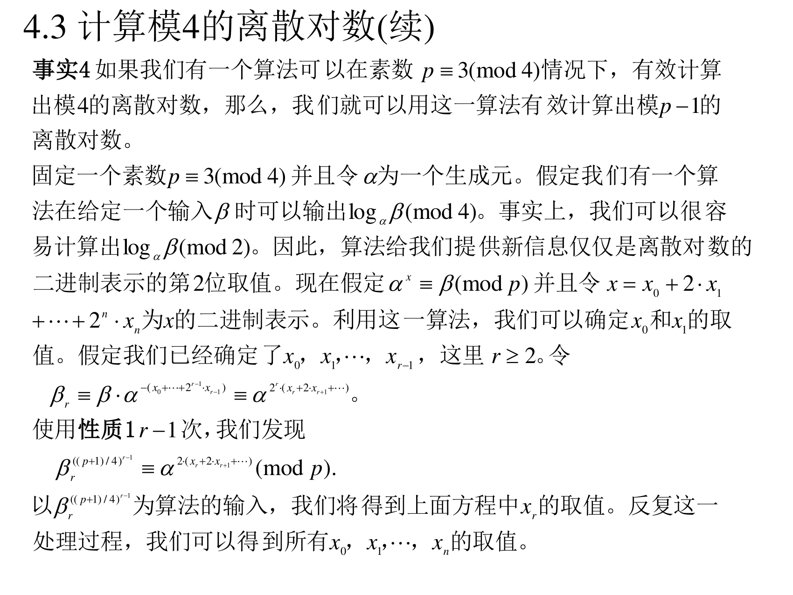
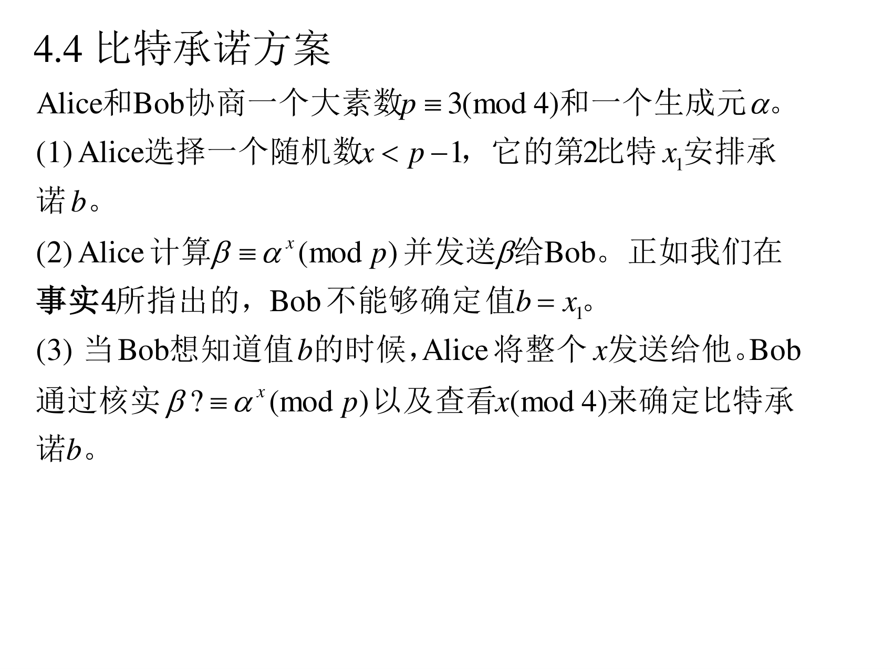

本页目录
6.4 比特承诺
最后这一节很有意思：前面都在讲"这个难题真好用"，这一节讲的是"这个难题里的某一小块其实是能算的 "——而且能算的那部分还有用。
6.4.1 背景：一个球赛预测的故事
（PPT 第 37 页）

Alice 声称发现了一种方法可以成功预测球赛的结果。她想把这种方法买给 Bob。Bob 要求她把周末的球赛结果预测一下以证明方法有效。Alice 说"没门，你可能利用我的预测结果去买彩票牟利，并且不与我分成。为什么不让我给你预测上周比赛的结果呢？ "
翻译成人话 ：这段故事就是"先承诺、后揭示 "的动机。Alice 想证明"我早就能预测"，但又不能提前告诉 Bob（怕他作弊）。她的办法是：先说一个密封的承诺——里面装着我上周的预测 ；等 Bob 承认这个承诺已经锁好之后，再打开给他看。因为承诺是"上周的比赛"（Bob 已经知道结果），所以没法造假。
把故事抽象成密码学问题 ：Alice 要"把一个比特 b b b
6.4.2 比特承诺的两个要求
（PPT 第 38 页）
Alice 能发送一个比特 b b b (1) Bob 在没有 Alice 的帮助下不能决定这一个比特的取值。 （隐藏性）
(2) Alice 一旦发送了这个比特，就不能改变取值情况。 （绑定性）
这样，对每场球赛，Alice 可以发送 b = 1 b=1 b = 1 b = 0 b=0 b = 0
这两条为什么必须同时满足 ：
只有 (1) 没有 (2)
Alice 可以事后改口，承诺毫无意义（"我早就说是 1 了"）
只有 (2) 没有 (1)
Bob 提前知道了预测，Alice 就拿不到分成了
这是一对矛盾的密码学目标 ，第五讲提过的"不可否认 "也有同样的味道。
6.4.3 计算模 4 的离散对数
要造出上面那个"信封"，需要一个技术前提：在 p ≡ 3 ( m o d 4 ) p\equiv3\pmod 4 p ≡ 3 ( mod 4 ) 。这一小节就是讲这件事。
6.4.3.1 为什么 p ≡ 1 ( m o d 4 ) p\equiv 1\pmod4 p ≡ 1 ( mod 4 ) p ≡ 3 ( m o d 4 ) p\equiv3\pmod4 p ≡ 3 ( mod 4 )
（PPT 第 39 页）

当 p ≡ 1 ( m o d 4 ) p\equiv1\pmod4 p ≡ 1 ( mod 4 ) p ≡ 3 ( m o d 4 ) p\equiv3\pmod4 p ≡ 3 ( mod 4 ) ( p − 1 ) / 4 (p-1)/4 ( p − 1 ) /4 含糊的分数指数 。事实上，这一问题可解也仅是在我们规定了离散对数为 0 到 p − 2 p-2 p − 2 2 6 ≡ 2 16 ≡ 9 ( m o d 11 ) 2^{6}\equiv2^{16}\equiv9\pmod{11} 2 6 ≡ 2 16 ≡ 9 ( mod 11 ) log 2 9 = 6 \log_2 9=6 log 2 9 = 6 模 4 并不同余 。
翻译成人话 ：
Pohlig-Hellman 求"模 d d d β ( p − 1 ) / d \beta^{(p-1)/d} β ( p − 1 ) / d d = 4 d=4 d = 4 4 ∤ p − 1 4\nmid p-1 4 ∤ p − 1 p ≡ 3 ( m o d 4 ) p\equiv3\pmod4 p ≡ 3 ( mod 4 ) ( p − 1 ) / 4 (p-1)/4 ( p − 1 ) /4
更要命的是："离散对数模 4"这个问法本身必须先把"取哪个离散对数"钉死 。6 6 6 16 16 16 log 2 9 \log_2 9 log 2 9 答案会不一样 ！所以必须约定"取 [ 0 , p − 2 ] [0,p-2] [ 0 , p − 2 ]
6.4.3.2 性质 1：一个"降指数"的引理
（PPT 第 40 页）

性质 1 ：令 p ≡ 3 ( m o d 4 ) p\equiv3\pmod4 p ≡ 3 ( mod 4 ) r ≥ 2 r\ge2 r ≥ 2 y y y α \alpha α γ \gamma γ p p p γ ≡ α 2 r ⋅ y ( m o d p ) \gamma\equiv\alpha^{2^{r}\cdot y}\pmod p γ ≡ α 2 r ⋅ y ( mod p )
γ ( p + 1 ) / 4 ≡ α 2 r − 1 ⋅ y ( m o d p ) \gamma^{(p+1)/4}\equiv\alpha^{2^{r-1}\cdot y}\pmod p γ ( p + 1 ) /4 ≡ α 2 r − 1 ⋅ y ( mod p ) 证明.
γ ( p + 1 ) / 4 ≡ α ( p + 1 ) ⋅ 2 r − 2 ⋅ y ≡ α 2 r − 1 ⋅ y ⋅ ( α p − 1 ) 2 r − 2 ⋅ y ≡ α 2 r − 1 ⋅ y ( m o d p ) \gamma^{(p+1)/4}\equiv\alpha^{(p+1)\cdot2^{r-2}\cdot y}\equiv\alpha^{2^{r-1}\cdot y}\cdot(\alpha^{p-1})^{2^{r-2}\cdot y}\equiv\alpha^{2^{r-1}\cdot y}\pmod p γ ( p + 1 ) /4 ≡ α ( p + 1 ) ⋅ 2 r − 2 ⋅ y ≡ α 2 r − 1 ⋅ y ⋅ ( α p − 1 ) 2 r − 2 ⋅ y ≡ α 2 r − 1 ⋅ y ( mod p )
翻译成人话 ：这是一个**"奇妙的指数减半器"**。
输入是 α 2 r y \alpha^{2^r y} α 2 r y 2 r 2^r 2 r
平方式地取 ( p + 1 ) / 4 (p+1)/4 ( p + 1 ) /4 2 r 2^r 2 r 2 r − 1 2^{r-1} 2 r − 1 2 2 2
秘密在于 ( p + 1 ) / 4 (p+1)/4 ( p + 1 ) /4 p ≡ 3 ( m o d 4 ) p\equiv3\pmod4 p ≡ 3 ( mod 4 ) p + 1 p+1 p + 1 ( p + 1 ) / 4 (p+1)/4 ( p + 1 ) /4 p + 1 ≡ 0 ( m o d p + 1 ) p+1\equiv0\pmod{p+1} p + 1 ≡ 0 ( mod p + 1 ) p − 1 p-1 p − 1 ( α p − 1 ) 2 r − 2 y ≡ 1 (α^{p-1})^{2^{r-2}y}\equiv1 ( α p − 1 ) 2 r − 2 y ≡ 1
为什么有用 ：它把一个"含 2 r 2^r 2 r 逐级剥掉 2 的因子 ，于是每剥一次就暴露出 x x x 下一位 。
6.4.3.3 事实 4：能把"模 4"升级成"模 p−1"
（PPT 第 41 页）

事实 4 ：如果我们有一个算法可以在素数 p ≡ 3 ( m o d 4 ) p\equiv3\pmod4 p ≡ 3 ( mod 4 ) p − 1 p-1 p − 1 p ≡ 3 ( m o d 4 ) p\equiv3\pmod4 p ≡ 3 ( mod 4 ) α \alpha α β \beta β log α β ( m o d 4 ) \log_{\alpha}\beta\pmod4 log α β ( mod 4 ) log α β ( m o d 2 ) \log_{\alpha}\beta\pmod2 log α β ( mod 2 ) 二进制表示的第 2 位 取值。现在假定 α x ≡ β ( m o d p ) \alpha^{x}\equiv\beta\pmod p α x ≡ β ( mod p ) x = x 0 + 2 ⋅ x 1 + ⋯ + 2 n ⋅ x n x=x_0+2\cdot x_1+\cdots+2^{n}\cdot x_n x = x 0 + 2 ⋅ x 1 + ⋯ + 2 n ⋅ x n x x x x 0 x_0 x 0 x 1 x_1 x 1 x 0 , x 1 , … , x r − 1 x_0,x_1,\dots,x_{r-1} x 0 , x 1 , … , x r − 1 r ≥ 2 r\ge2 r ≥ 2
β r ≡ β ⋅ α − ( x 0 + ⋯ + 2 r − 1 ⋅ x r − 1 ) ≡ α 2 r ⋅ ( x r + 2 ⋅ x r + 1 + ⋯ ) \beta_r\equiv\beta\cdot\alpha^{-(x_0+\cdots+2^{r-1}\cdot x_{r-1})}\equiv\alpha^{2^{r}\cdot(x_r+2\cdot x_{r+1}+\cdots)} β r ≡ β ⋅ α − ( x 0 + ⋯ + 2 r − 1 ⋅ x r − 1 ) ≡ α 2 r ⋅ ( x r + 2 ⋅ x r + 1 + ⋯ ) r − 1 r-1 r − 1 β r ( ( p + 1 ) / 4 ) r − 1 ≡ α 2 ( x r + 2 ⋅ x r + 1 + ⋯ ) ( m o d p ) \beta_r^{((p+1)/4)^{r-1}}\equiv\alpha^{2(x_r+2\cdot x_{r+1}+\cdots)}\pmod p β r (( p + 1 ) /4 ) r − 1 ≡ α 2 ( x r + 2 ⋅ x r + 1 + ⋯ ) ( mod p ) β r ( ( p + 1 ) / 4 ) r − 1 \beta_r^{((p+1)/4)^{r-1}} β r (( p + 1 ) /4 ) r − 1 x r x_r x r x 0 , x 1 , … , x n x_0,x_1,\dots,x_n x 0 , x 1 , … , x n
翻译成人话 （这是本讲最绕的一段，慢慢来）：
目标 ：求出 x x x 每一个二进制位 x 0 , x 1 , x 2 , … x_0,x_1,x_2,\dots x 0 , x 1 , x 2 , … 已知 ：log α β ( m o d 2 ) \log_\alpha\beta\pmod 2 log α β ( mod 2 ) log α β ( m o d 4 ) \log_\alpha\beta\pmod4 log α β ( mod 4 ) 第 2 位 x 1 x_1 x 1 x 0 x_0 x 0 x 1 x_1 x 1 剥掉已知位 ：如果已经知道 x 0 , … , x r − 1 x_0,\dots,x_{r-1} x 0 , … , x r − 1 β r = β ⋅ α − ( x 0 + ⋯ + 2 r − 1 x r − 1 ) \beta_r=\beta\cdot\alpha^{-(x_0+\cdots+2^{r-1}x_{r-1})} β r = β ⋅ α − ( x 0 + ⋯ + 2 r − 1 x r − 1 ) β \beta β β r = α 2 r ( x r + 2 x r + 1 + ⋯ ) \beta_r=\alpha^{2^{r}(x_r+2x_{r+1}+\cdots)} β r = α 2 r ( x r + 2 x r + 1 + ⋯ ) 指数的 2 的幂次刚好是 r r r 。用性质 1 连续 r − 1 r-1 r − 1 ：每用一次，指数里的 2 r 2^r 2 r r − 1 r-1 r − 1 2 1 = 2 2^{1}=2 2 1 = 2 β r ( ( p + 1 ) / 4 ) r − 1 ≡ α 2 ( x r + 2 x r + 1 + ⋯ ) \beta_r^{((p+1)/4)^{r-1}}\equiv\alpha^{2(x_r+2x_{r+1}+\cdots)} β r (( p + 1 ) /4 ) r − 1 ≡ α 2 ( x r + 2 x r + 1 + ⋯ ) 喂给"模 4 算法" ：这个元素是 α 2 y \alpha^{2y} α 2 y y = x r + 2 x r + 1 + ⋯ y=x_r+2x_{r+1}+\cdots y = x r + 2 x r + 1 + ⋯ ≡ 2 y ( m o d p − 1 ) \equiv2y\pmod{p-1} ≡ 2 y ( mod p − 1 ) 2 y m o d 4 = 2 x r m o d 4 2y\bmod4=2x_r\bmod4 2 y mod 4 = 2 x r mod 4 只取决于 x r x_r x r ！于是答案非 0 即 2，除以 2 就知道 x r x_r x r
结论 ："能算模 4" ⇒ "能算全部位" ⇒ "能算整个离散对数" 。（所以"模 4 的离散对数"其实和完整 DLP 一样难 —— 正因为难，它才能当承诺用。）
6.4.4 比特承诺方案
（PPT 第 42 页）

Alice 和 Bob 协商一个大素数 p ≡ 3 ( m o d 4 ) p\equiv3\pmod4 p ≡ 3 ( mod 4 ) α \alpha α (1) Alice 选择一个随机数 x < p − 1 x<p-1 x < p − 1 第 2 比特 x 1 x_1 x 1 b b b 。
(2) Alice 计算 β ≡ α x ( m o d p ) \beta\equiv\alpha^{x}\pmod p β ≡ α x ( mod p ) β \beta β 事实 4 所指出的，Bob 不能够确定值 b = x 1 b=x_1 b = x 1 (3) 当 Bob 想知道值 b b b x x x β ≡ α x ( m o d p ) \beta\equiv\alpha^{x}\pmod p β ≡ α x ( mod p ) x ( m o d 4 ) x\pmod4 x ( mod 4 ) b b b
翻译成人话 （把两个要求对照着看）：
隐藏性（要求 1） ：Bob 只知道 β = α x \beta=\alpha^x β = α x x 1 x_1 x 1 log α β m o d 4 \log_\alpha\beta\bmod4 log α β mod 4 难 。所以 Bob 拿不到 b b b 绑定性（要求 2） ：Alice 想反悔就得换一个 x ′ x' x ′ α x ′ = β \alpha^{x'}=\beta α x ′ = β x ′ x' x ′ x x x x ′ ≡ x ( m o d p − 1 ) x'\equiv x\pmod{p-1} x ′ ≡ x ( mod p − 1 ) p − 1 p-1 p − 1 x ′ m o d 4 x'\bmod4 x ′ mod 4 改不了 ✔
为什么用"第 2 比特 x 1 x_1 x 1 ：因为 Bob 能免费知道 x 0 x_0 x 0 x 0 x_0 x 0 x 1 x_1 x 1